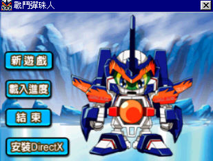
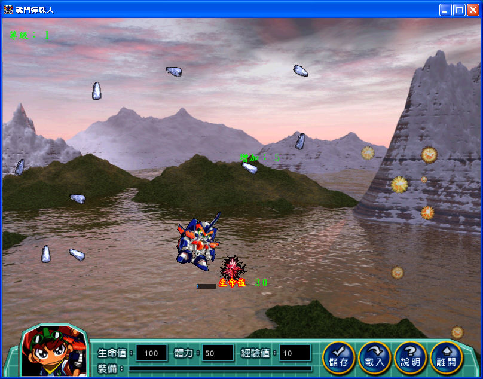

名稱：B傳說：戰鬥彈珠人 (中文版) 簡介：日本d-rights 2006年出品的清版射擊遊戲，由卉谷中文化並代理發行 [待補]。

保護：光碟，破解碼： FrieBall.exe 75 05 E9 6E 01 -- 00 -- -- -- 備註：遊戲需要dx8vb.dll（光碟裡有）。 備註：以下為各系統執行情況，目前只有VMware+XP是正常的（Win98必須安裝DirextX 9.0， 否則會出現「系統資源不足」的錯誤訊息）： 1.虛擬機+XP：需同時搭配WineD3D與DxWnd（不可全螢幕）。VirtualBox仍有貼圖問題，建議 使用VMware。 2.Win64：無法執行（系統資源不足）。 3.VMware+Win98：顯示超出視窗範圍，無法操作（同XP+WineD3D）。 4.86Box 6.0+Win98：顯示全黑。 5.86Box 3.11+Win98、PCemV17+Win98：人物顯示模糊，其餘正常。